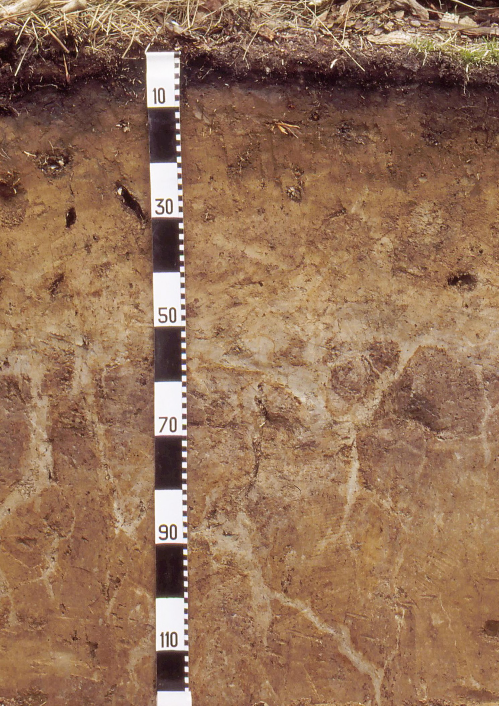

Er is in Vlaanderen al enige tijd een grote vraag naar een handleiding bodemkunde die toegespitst is op de context van archeologisch onderzoek. De Code van Goede Praktijk voor de uitvoering van en rapportering over archeolo- gisch vooronderzoek en archeologische opgravingen en het gebruik van metaaldetectoren (versie 4.0) (hierna CGP) legt heel precies vast wat de aardkundige of de assistent-aardkundige minimaal moet beschrijven bij aardkundig onderzoek (zowel voor boringen als bij profielen) in de context van archeologisch onderzoek in Vlaanderen, maar zegt niet precies hoe dit te doen.
Om aan die vraag tegemoet te komen, gaf het agentschap Onroerend Erfgoed de opdracht aan bodemkundige Jari Mikkelsen van Raakvlak om een handleiding bodemkunde voor archeologisch onderzoek te realiseren en zich daartoe te omringen met een werkgroep van experten binnen het domein.
Het resultaat, deze ‘Veldhandleiding voor het beschrijven van bodems bij archeologisch onderzoek in Vlaanderen’ komt tegemoet aan de vraag naar ondersteuning bij het kwaliteitsvol uitvoeren van handelingen die de CGP vereist. Deze richtlijnen gelden niet voor controleboringen, noch voor archeologisch booronderzoek.
De CGP omschrijft een referentieprofiel als een afgebakend deel van de opbouw van de ondergrond dat de aardkun- dige eenheden bevat die het meest representatief zijn voor een samenhangend deel van een gebied. In de praktijk en in de bij het agentschap aangeleverde documenten merken we dat er heel wat onduidelijkheid is over deze formule- ring. In het bijzonder omtrent de omschrijving ‘het meest representatief voor een samenhangend deel van het gebied’. In deze veldhandleiding maken we daarom een onderscheid tussen beschrijvingen op basisniveau en beschrijvingen op referentieniveau en geven we ook aan hoe met het onderscheid tussen beide om te gaan.
De beschrijving op basisniveau omvat de belangrijkste bodemkenmerken en laat toe om, samen met de observaties beschreven op referentieniveau, de observaties op basisniveau correct te interpreteren.
De beschrijving op referentieniveau beschrijft alle bodemkenmerken die nodig zijn om een observatie (bodemprofiel of boring) correct te interpreteren en alle vragen erover te beantwoorden, zonder bijkomende waarnemingen op de site. Het onderzoek van een bodemprofiel heeft een diepte van minstens 120 cm onder het maaiveld of antropogeen aangevoerd pakket, of reikt tot minstens 30 cm in de C-horizont.
Enkel de informatie van de observaties (boringen, profielbeschrijvingen) beschreven op referentieniveau wordt bezorgd aan DOV.
1.1 Landschappelijke boringen
Om het aantal beschrijvingen op referentieniveau te bepalen bij een landschappelijk booronderzoek, hanteert de aardkundige de richtlijnen in onderstaande tabel:
| Aantal boringen (n) | Aantal referentieboringen |
|---|---|
| ≤20 | 5 |
| 21-30 | 6 |
| 31-40 | 7 |
| Per bijkomende 10 boringen: | +1 |
Voorbeeld: Een booronderzoek telt 23 boringen. Hiervan moet de aardkundige zes boringen op referentieniveau beschrijven. Voor de overige 17 boringen volstaat een beschrijving op basisniveau.
Voorbeeld: Een booronderzoek telt 67 boringen. Hiervan moet de aardkundige 7 + (67-40)/10 = 7 + 2,7= 9,7 ≈ 10 boringen op referentieniveau beschrijven. Voor de overige 57 boringen volstaat een beschrijving op basisniveau.
Voorbeeld: Een booronderzoek telt 258 boringen. Hiervan moet de aardkundige 7 + (258-40)/10 = 7 +21,8= 28,8 ≈ 29 boringen op referentieniveau beschrijven. Voor de overige 229 boringen volstaat een beschrijving op basisniveau.
1.2 Landschappelijke profielputten, proefsleuven en proefputten, proefputten in functie van steentijd artefactensites en archeologische opgravingen.
Bij landschappelijke profielputten, proefsleuven en proefputten, proefputten in functie van steentijd artefactensites en archeologische opgravingen (inclusief werfbegeleiding) maakt het bepalen van het aantal profielbeschrijvingen op referentieniveau deel uit van het bureauonderzoek. Dit gebeurt door de erkende archeoloog na samenspraak met de aardkundige of assistent-aardkundige.
Er zijn twee soorten situaties:
- Het projectgebied ligt volledig in een zone die gekarteerd is (Bodemkaart van België) volgens de morfogenetische karteringslegende of volgens de legende van de kuststreek:
Het aantal karteringseenheden aanwezig binnen het projectgebied op de bodemkaart op schaal 1/20.000 is gelijk aan het minimum te beschrijven aantal aardkundige profielen op referentieniveau. Voor elke karteringseenheid moet er dus minstens één profielbeschrijving op referentieniveau zijn. De aardkundige die het veldwerk uitvoert, kiest zelf de locaties van de bodemprofielen tijdens het veldwerk, zodat elke karteringseenheid op de bodemkaart op schaal 1/20.000 minstens door één referentiebeschrijving is vertegenwoordigd.
Als het projectgebied het voorwerp uitmaakt van opeenvolgende fases van vooronderzoek en onderzoek met een aardkundig luik dan kan de aardkundige de profielen beschreven op referentieniveau van alle fases opnemen in de berekening van het aantal op referentieniveau te beschrijven profielen. Dus wanneer er bijvoorbeeld tijdens een vooronderzoek met proefsleuven en proefputten al de nodige profielbeschrijvingen op referentieniveau zijn gemaakt dan hoeft dit niet herhaald te worden bij een eventuele latere archeologische opgraving van dit terrein.
Het projectgebied is niet of slechts gedeeltelijk in kaart gebracht (Bodemkaart van België):
Het volgens de morfogenetische legende of de legende van de kuststreek gekarteerde gedeelte van het projectgebied volgt bovenstaande richtlijnen. Voor het gedeelte van het projectgebied waarover de Bodemkaart van België geen informatie biedt (code OA, OB, OC, OD, OE, OG, OL, ON, OO, OT, OU, OV, OZ, etc.), past de aardkundige volgende regels toe om het aantal referentiebodemprofielen te bepalen:
| Projectgebied in m² | Minimum aantal referentiebodemprofielen |
|---|---|
| <1000 | 2 |
| 1.000-2.000 | 3 |
| 2.000-4.000 | 4 |
| Per bijkomende 2.000m² | +1 |
1.3 Hoe bepaal je het registratieniveau voor boringen en voor profielen?
Bij boringen vormt de eerste boring automatisch een boring op referentieniveau. Voor de volgende boringen volstaat in principe een beschrijving op basisniveau. Zodra de horizontenopvolging duidelijk verschilt van de eerste boring en er horizonten verschijnen of verdwijnen of textuur of drainage wijzigt, volgt een nieuwe beschrijving op referentieni- veau. De verhouding tussen het aantal boringen en het aantal boringen beschreven op referentieniveau van de tabel hierboven is hierbij een goede richtlijn om aan te houden.
Dezelfde aanpak geldt bij het beschrijven van bodemprofielen. De profielen die de variabiliteit op het terrein vatten, vereisen een beschrijving op referentieniveau. Voor de overige profielen die gelijkaardig zijn aan de referentieprofielen en daarom als ondersteunend kunnen gelden, volstaat een beschrijving op basisniveau.
De aardkundige of assistent-aardkundige maakt de inschatting wanneer een beschrijving op referentieniveau nodig is en beargumenteert dit in het eindverslag.
De veldhandleiding behandelt de belangrijkste bodemkenmerken die mogelijk aan bod komen bij een aardkundig onderzoek op archeologische sites of bij archeologisch onderzoek in Vlaanderen. Om bodembeschrijvingen met elkaar te kunnen vergelijken, zoals bijvoorbeeld bij syntheseonderzoeken, is essentieel dat ze op een objectieve en gestan- daardiseerde manier gebeuren. De uniformiteit van de gegevens vergemakkelijkt ook de opname van de informatie in de gegevensbank van de Databank Ondergrond Vlaanderen (DOV).
Het vertrekpunt voor deze veldhandleiding zijn de FAO Guidelines for Soil Description (FAO 2006), een methodiek uitgewerkt door de Wereldvoedselorganisatie met als doel bodems te bestuderen in functie van landbouwproductie. Deze handleiding is afgestemd op de noden van archeologisch terreinonderzoek in Vlaanderen. De aanpassingen zijn gebaseerd op de ervaringen en bevindingen van de auteurs en in het bijzonder op de expertise van prof. em. Dr. Roger Langohr.
De veldhandleiding is een verkorte versie van een uitgebreide bodemhandleiding en is bedoeld voor gebruik door de aardkundige of de assistent-aardkundige tijdens het veldwerk.
Hoofdstuk 2 bespreekt welke algemene informatie men moet noteren over het onderzoek en de locatie van het onderzoek.
Hoofdstuk 3 behandelt de belangrijkste bodemvormende factoren.
Hoofdstuk 4 vormt een handige en beknopte gids voor de bodemkundige beschrijving van de individuele bodemhori- zonten of archeologische lagen, zowel in boringen als in bodemprofielen.
Hoofdstuk 5, tot slot, geeft extra info omtrent de classificatie van het bodemprofiel op basis van de profielbeschrij- ving of boring.

Bodem ontwikkeld in loess met waterstagnatie op ± 40-50cm diepte. De bleke verticale tongen vormen een polygonale structuur en gaan door de fragipan.
Site: Zoniënwoud Brussel / foto en copyright: Roger Langohr